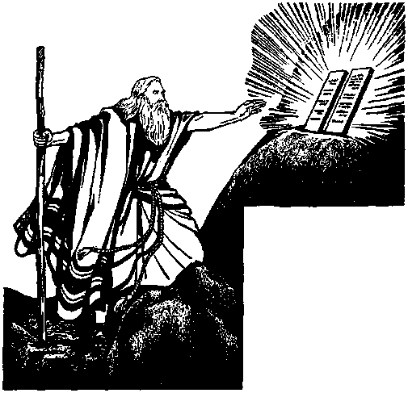
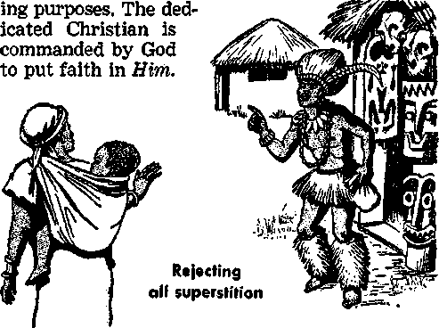

71. What kind of people will live in the new world, and so what will those who want to live in that new world now do?
72. (a) How could one steal time? (b) What kind of work should a Christian do?

LIVING IN
NOTE: Unless otherwise indicated, al] Scripture texts quoted in this publication are trona the New World Translation of the Holy Scriptures, 1961 Edition. For these references we show first the name of the Bible book, next the number of the chapter, and then the verse number.
copyright, 1963 by WATCH TOWER BIBLE & TRACT SOCIETY OF PENNSYLVANIA
Published by Watchtower Bible and Tract Socety of New York, Inc.
International Bible Students Association Brooklyn, New York, U.S.A.
Made in the United States of America
EVERYONE likes to hear good news. How happy is the husband when he hears that his wife has successfully given birth to their firstborn son! How happy we are to hear of an impending visit to our home of good friends or dearly loved members of the family, mother or father perhaps! How happy is the farmer when he hears good news from the fields, that the seed sown is beginning to sprout! How happy is the man who, after searching many months for employment, finally obtains a job! Once again he will have money to provide the necessities of life for himself, his wife and children. Yes, there are many events that can mean good news for us, but of all the news that is good none could be better than the “good news of [God’s] kingdom,” since it holds out the hope of eternal blessings of life and peace for obedient mankind in a new world.—Matthew 24:14.
’But note that along with good news there often comes responsibility. It presents a challenge. It calls on the receiver of the good news to act, to do something to show his appreciation for the good news so that he may fully benefit by it. The arrival of a firstborn is good news to the husband
1. Which is the best news to be heard today, and why so?
2. What often comes with hearing good news? Illustrate.
and wife, but by this miracle of birth they become father and mother. It calls for them to adjust their lives to the new situation and shoulder the responsibility of parenthood. The arrival of guests means work for the householder, though it is happy work, providing the needed hospitality. The springing up of a new crop in the farmer’s fields is a challenge to him. It requires his time and attention—scaring off the birds that might attack the new growth, hoeing out the weeds and watering the young plants. It spells hard work as he cares for the new crop until it grows to maturity and is successfully harvested. The good news of employment for the unemployed man brings with it responsibility. Now he has a contract of work to which he must be loyal in order to retain his job. The challenge to him is, Will he prove to be a good workman?

Paradise restored by God’s Kingdom
THE CHALLENGE OF THE “GOOD NEWS"
3 Likewise with the “good news of the kingdom.” The hearing of this good news is a challenge—it calls upon those hearing it to do something that will demonstrate they appreciate it. And what good news it is! God’s kingdom under Christ Jesus to destroy this wicked system of things; to bring to an end hatred and war, sickness, disease and death; to restore this earth to a paradise populated by perfect, healthy men and women in peace and happiness, and to bring this about in the very near future, within this generation. (See Daniel 2:44; Psalm 37:10, 11; 46:9; Isaiah 9:6, 7; Revelation 21:3, 4; Matthew 24:314, 32-34.) Without doubt you are already somewhat familiar with this good news. The fact that you are reading these pages indicates your interest in the “good news” and in God’s purpose by means of his kingdom. Without doubt it is your wish to live under that best of kingdoms and eternally enjoy its blessings. If this is your sincere desire, then it is natural for you to ask, “What will this require of me? If I accept the good news of God’s kingdom, how will it affect my life now?”
4 We can all agree that the words of the apostle Paul at Ephesians 5:16 are true of our time: “The days are wicked.” Yes, we most certainly live in a wicked world, a world of unrighteousness, where men’s thoughts and deeds are bad. The conduct of men and nations does not bring glory to God and is unworthy of his kingdom. We have grown up in
3. (a) What does the "good news” tell us of the future of this earth? (b) What questions do sincere persons now ask?
4. What kind of conduct is now required of those who wish to gain life under God's kingdom, and why does this mean a change?
this world, amidst its traditions and customs, many of which are contrary to God’s righteous principles, and in company with people whose conduct falls far short of the standards we find in the Bible, God’s Word. This has all had its effects on us and on our way of life. Also, having grown up in a divided world we have acquired different loyalties—loyalties to family, tribe, race and nation —often resulting in division, hatred, suspicion and false pride, a feeling of superiority over others. But when we read about God’s kingdom from the Bible we learn of another loyalty that is required of those who will gain everlasting life. This is loyalty to Jehovah, the Supreme Ruler of the universe, and to his kingdom under Christ Jesus, and we learn of a new way of life in obedience to the rule of that kingdom. This calls for conduct different from that of the world. It calls for one to “behave in a manner worthy of the good news.” —Philippians 1:27.
4 It is important to appreciate that the “good news” concerns a kingdom, God’s kingdom. A kingdom is a government and thus exercises rule or governs those who are its subjects. Just as other governments have laws to govern their subjects, so God’s kingdom has laws or rules governing the conduct of its subjects. Therefore, acceptance of the “good news” really means to accept the responsibility of being a subject of God’s heavenly kingdom, to be submissive to it and humbly to accept and obey the commands of the Sovereign Ruler of the universe, Jehovah God. Only by doing this could one be “counted worthy of the kingdom of God.”—2 Thessalonians 1:5.
5. What does it mean for us to accept the “good news of the kingdom”?
6 This is a matter that requires the urgent attention of all persons living upon the earth. The “good news of the kingdom” is now being preached worldwide—that cannot be denied. This is because we are living in the “last days” of this present world, and a time of final judgment for all living on the earth is at hand. What will decide between life and death for you is how you listen to the “good news” and whether you are willing to be obedient to it and bring your life into harmony with it. Very soon now Christ Jesus as King of God’s kingdom, along with his holy angels, is due to bring “vengeance upon those who do not know God and those who do not obey the good news about our Lord Jesus.”—2 Thessalonians 1:7-10.
THE GOOD NEWS DECLARED TO ISRAEL
7 The Israelites, descendants of Jacob or Israel, the son of Isaac, son of Abraham, resided for many years in the land of Egypt. There they became numerous. There, in that land of the Pharaohs, they came to be hated and persecuted. They were reduced to being a slave people and suffered much oppression. But in the midst of their affliction there came to them good news! That is why many years later they were spoken of as the people “to whom the good news was first declared.” (Hebrews 4:6) Jehovah God, through his spokesman Moses, addressed this thrilling message to the Israelites: “I shall bring you up out of affliction by the Egyptians to the land of the Canaanites ... to a land flowing with milk and honey.” (Exodus 3:17) What a comforting mes-
6, Why is this a very urgent matter today?
z. What good news was declared to the nation of Israel while they were in Egypt? sage! And with what joy the Israelites heard it! What joy too when they later beheld the miraculous deliverance that Jehovah wrought for them as he demonstrated his almighty power on their behalf by means of the ten plagues and finally in destroying the Egyptians at the Red Sea, while the Israelites under the command of Moses walked through on dry land to safety! (Exodus, chapters 7 to 15) While still down in Egypt Moses had been further commanded to declare to this people: “Therefore say to the sons of Israel, ‘I am Jehovah, and I shall certainly bring you out from under the burdens of the Egyptians and deliver you from their slavery, and I shall indeed reclaim you with an outstretched arm and with great judgments. And I shall certainly take you to me as a people, and I shall indeed prove to be God to you; and you will certainly know that I am Jehovah your God who is bringing you out from under the burdens of Egypt.’ ” (Exodus 6:6, 7) Here was the blessed promise to the Israelites of being brought into a special relationship with Jehovah as his people, and this would most certainly require of them conduct worthy of that great privilege.
8 Appreciation for this good news and the privilege of having Jehovah as their God would surely cause the nation of Israel to be eager and willing to do obediently all that Jehovah commanded them. The opportunity to demonstrate such obedience came very soon, when, through Moses, Jehovah commanded the people while still in Egypt
8. (a) How would the Israelites show appreciation for the good news declared to them? (b) What quality did the nation demonstrate that led to their deliverance from Egypt?
tsraeine _ “*•
splashing blood on doorposts
the Israelites on this occasion
to celebrate the Passover. Each family had to assemble in its own home on the night of Nisan 14 (Jewish calendar). A lamb was to be slain and the blood splashed on the doorposts. (Exodus 12:1-23) After receiving these instructions from Moses “the sons of Israel went and did just as Jehovah had commanded Moses and Aaron. They did just so.” (Exodus 12:28) The obedience of resulted in their homes being “passed over” when the angel of Jehovah struck down all the firstborn of the Egyptians. “And it came about on this very day that Jehovah brought the sons of Israel together with their armies out of the land of Egypt.” —Exodus 12:51.
9 In the third month after their leaving Egypt the Israelites came to Mt. Sinai and there Jehovah, again through Moses as his spokesman, made clear to them the new relationship into which they were now to enter as his people. “And Moses
9. (a) What did Jehovah say the nation of Israel would become? (b) What did he require of them?
went up to the true God, and Jehovah began to call to him out of the mountain, saying: ‘This is what you are to say to the house of Jacob and to
Moses receives the Law
tell the sons of Israel, “You yourselves have seen what I did to the Egyptians, that I might carry you on wings of eagles and bring you to myself. And now if you will strictly obey
my voice and will indeed keep my covenant, then you will certainly become my special property out of all other peoples, because the whole earth belongs to me. And you yourselves will become to me a kingdom of priests and a holy nation.” These are the words that you are to say to the sons of Israel.’ So Moses came and called the older men of the people and set before them all these words that Jehovah had commanded him. After that all the people answered unanimously and said: ‘All that Jehovah has spoken we are willing to do.’ ”—Exodus 19:3-8.
10 The nation of Israel was unique. The whole nation, every man, woman and child, came under that covenant arrangement, often called the law covenant, and by it they literally became a separate nation or people for Jehovah. Indeed, Jehovah was their King and so exercised the right to make laws governing the lives of his subjects covering every aspect of life. The laws given to them through Moses concerned their worship of God, the making of offerings and sacrifices; there were laws concerning eating, concerning spiritual and physical cleanness, concerning proper moral behavior; laws were given regarding the proper relationship in marriage, the duties of husbands and wives, and parents and children; there were laws and principles guiding their relationship with one another as neighbors, emphasizing the need for honesty and justice as well as mercy and love in dealing with one another.
11 Some of these laws merely enlarged principles or laws already given previously and which were, and still are, binding on all men as descendants of Adam and Noah. For example, laws concerning the sanctity of blood given to Israel were based on the divine command given by God to Noah following the flood, at Genesis chapter 9. “Every moving animal that is alive may serve as food for you. As in the case of green vegetation, I do give it all to you. Only flesh with its soul—its blood io. To what extent did Jehovah make laws governing his covenant people?
11. What law concerning blood did God give to Israel, and on what previous command was this law based? —you must not eat. And, besides that, your blood of your souls shall I ask back. From the hand of every living creature shall I ask it back; and from the hand of man, from the hand of each one who is his brother, shall I ask back the soul of man. Anyone shedding man’s blood, by man will his own blood be shed, for in God’s image he made man.” (Genesis 9:3-6) The reason for showing such respect in the use of blood was that blood represented life, or soul; and since life is a gift of God, he has the right to require men to respect the lives of other men and women and also animals. Though man was allowed to kill animals for food, there was to be no wanton slaughter of animals for sport. Hence in God’s law to the Israelites respect for life was emphasized, including respect for blood as representing life. Jehovah commanded: “As for any man of the house of Israel or some alien resident who is residing as an alien in your midst who eats any sort of blood, I shall certainly set my face against the soul that is eating the blood, and I shall indeed cut him off from among his people. For the soul of the flesh is in the blood, and I myself have put it upon the altar for you to make atonement for your souls, because it is the blood that makes atonement by the soul in it. That is why I have said to the sons of Israel: ‘No soul of you should eat blood and no alien resident who is residing as an alien in your midst should eat blood.’ As for any man of the sons of Israel or some alien resident who is residing as an alien in your midst who in hunting catches a wild beast or a fowl that may be eaten, he must in that case pour its blood out and cover it with dust. For the soul of every sort of flesh is its blood by the soul in it. Consequently I said to the sons of Is-
LIVING IN HOPE OF A RIGHTEOUS NEW WORLD 13 rael: ‘You must not eat the blood of any sort of flesh, because the soul of every sort of flesh is its blood. Anyone eating it will be cut off.’ ” In the sixth of the Ten Commandments the sacredness of life was again emphasized in the words, “You must not murder.”—Leviticus 17:10-14; Exodus 20:13. .
12 The Ten Commandments stated ten basic laws or rules governing the Israelites. They were inscribed by God himself by the power of holy spirit on two stone tablets that were given to Moses on Mount Sinai. Rightly they occupied the preeminent place in the law code given to Israel, though remaining part of it. They set out basic laws or principles, rules of conduct governing first the relationship of the Israelites to God and then their relationship to the family unit and to one another. The first four emphasized the need for wholehearted and exclusive worship of Jehovah as God and obedience to his commandments. The fifth showed the need for family unity, the children respecting the father and mother; and the remaining five related to dealings with fellow creatures: not to murder, not to commit adultery, not to steal, not to testify falsely against another, not to covet, that is, not to desire wrongfully something that belongs to another.—Exodus 20:1-17.
NATION OF ISRAEL PROVIDES WARNING EXAMPLE
13 Obedience to Jehovah’s laws would bring untold blessings to the Israelites. His commandments
12. What is set out in the Ten Commandments, which Jehovah wrote on the stone tablets?
13, 14. (a) What would result to Israel by obedience to God’s laws? (b) What blessing did come to them, and why did this not last?
would guide them in wholesome conduct that would promote unity in the nation, good health and happiness. But most important of all, they would direct them in right worship, in right conduct that would be pleasing to Jehovah their God, and would ensure his favor. Their obedience would protect them from false religion and from immoral practices that would lead to sin and rebellion and eventually rejection by God.
14 True to his promise, God did lead the Israelites to a land flowing with milk and honey. (Exodus 3:8; Numbers 13:27) After many experiences the nation was settled in the Promised Land, Canaan or Palestine, and it is reported that under the rule of King Solomon “peace itself became his in every region of his, all around. And Judah and Israel continued to dwell in security, everyone under his own vine and under his own fig tree, from Dan to Beer-sheba, all the days of Solomon.” (1 Kings 4:24, 25) But such blessings did not last. Repeated disobedience to God’s law finally reaped its proper reward—rejection by God as his people. Instead of blessings, there came upon the nation the curses that God had foretold for such disobedience.
13 While the law covenant had the Ten Commandments as a foundation, the relationship of the nation with God was based really on two fundamental principles—love of God and love of neighbor. (Deuteronomy 6:5-9; Leviticus 19:18) Faithfulness to these two principles was most essential to remaining in God’s favor. Weakness or temporary failure due to human imperfection,
15. (a) Upon what two basic commands was the relationship oi Israel to Jehovah based? (b) Why would any hypocritical form of worship not deceive Jehovah?
LIVING IN HOPE OF A RIGHTEOUS NEW WORLD 15 while bringing correction and reproof, could still be forgiven, but when the nation lost its love for God and no longer served him with a whole heart this could only lead to disaster. (1 Chronicles 28: 9; Proverbs 4:23) No hypocritical form of worship could deceive him, for Jehovah is a God who 'sees the heart’ and who is ‘searching the hearts’ of men. The hearts of the greater number of the people of Israel turned from love of God and neighbor to love just for themselves, and Jehovah discerned this. He could see the wicked deeds performed, first in the dark and then openly in the daylight, as the hearts of the people became hardened in bad conduct.—1 Samuel 16:7; Jeremiah 17:10.
16 The Israelites entered the Promised Land in 1473 B.C., and the land was finally subdued under them in the time of King David, whose reign of forty years ended in 1037 B.C. Forty years later the nation was torn in two by jealousy and rivalry, and so, following the death of King Solomon in 997 B.C., the original nation of Israel was divided into two kingdoms, the ten-tribe kingdom of Israel to the north with Samaria as capital, and the two-tribe kingdom of Judah to the south with Jerusalem as capital. The northern ten-tribe kingdom was destroyed by the Assyrians in 740 B.C., and then in 607 B.C. the kingdom of Judah was destroyed by the Babylonians. Not long before this end to the kingdom of Judah, Jeremiah uttered to them these words: “ ‘ “For I solemnly admonished your forefathers in the day of my bringing them up out of the land of Egypt
16. (a) How did calamity come upon that nation? (b) How did the prophet Jeremiah explain the reason for this?
and down to this day, rising up early and admonishing, saying: ‘Obey my voice.’ But they did not listen or incline their ear, but they kept walking each one in the stubbornness of their bad heart; and so I brought upon them all the words of this covenant that I commanded them to do, but that they did not do.” ’ Furthermore, Jehovah said to me: ‘Conspiracy has been found among the men of Judah and among the inhabitants of Jerusalem. They have returned to the errors of their forefathers, the first ones, who refused to obey my words, but who themselves have walked after other gods in order to serve them. The house of Israel and the house of Judah have broken my covenant that I concluded with their forefathers. Therefore this is what Jehovah has said, “Here I am bringing upon them a calamity that they will not be able to get out of; and they will certainly call to me for aid, but I shall not listen to them.” ’ ” —Jeremiah 11:7-11. Compare Deuteronomy 6:1215 and 28:15,45-47.
17 Jehovah, in his great mercy and in fulfillment of his promise and purpose, did restore a remnant of the nation from Babylon back to the Promised Land after a period of seventy years’ desolation. Once again good news of this deliverance came to the people of Israel while in a captive state. This remnant of natural Israel was returned to Palestine in order that Jehovah’s worship might be restored there, though they were not restored as an independent nation, a separate kingdom.
17. What temporary restoration did the Israelites receive?
They rejected Jesus the Messiah
18 Did that ancient nation of Israel in the end prove “worthy of the good news” that had been preached to them by Moses down in Egypt? Did they fulfill the promise made by their forefathers to do all that Jehovah commanded them and to be truly his people, doing his will? The inspired Record answers No! Their complete unworthiness as a nation was clearly seen by their attitude toward Jesus, the promised Messiah, whom they rejected and had impaled on a stake. Just before his death Jesus pronounced judgment upon the nation when he said: “Jerusalem. Jerusalem, the killer of the prophets and stoner of those sent forth to her,— how often I wanted to gather your children together, the way a hen gathers her chicks together under her wings! But you people did not want it. Look! Your house is abandoned to you.”—Matthew 23:37, 38; Luke 23:18-25; Acts 2:23.
19 . Did the nation of Israel prove "worthy of the good news’* that was proclaimed to them?
,0 The Israelites had enjoyed the high privilege of being a nation of Jehovah’s witnesses. (Isaiah 43:10-12) Not that they were commanded to preach concerning Jehovah to all the other nations of the earth; but they had been set apart for Jehovah’s exclusive service and worship. By the wonderful works that Jehovah performed on behalf of them and by their practicing true worship when they were faithful, Jehovah made a great name for himself. But they could only continue as his witnesses by holding to true worship and honoring the covenant he made with them and by obeying his commandments. This they failed to do. So Jehovah cast off natural Israel. The law covenant arrangement with them came to an end, being fulfilled in Jesus and its law being nailed to the torture stake. (Colossians 2:14) But this did not bring to an end all of God’s dealings with men. Now, with Christ Jesus as Mediator, a new covenant arrangement was inaugurated, not with natural Israel, but with a nation producing the right fruits, whose conduct would be worthy of a heavenly kingdom of God with Christ as King. —Hebrews 8:6; Matthew 21:43.
THE “GOOD NEWS” SEPARATES ‘A PEOPLE FOR JEHOVAH’S NAME’
20 To which nation did Jesus refer when he said, at Matthew 21:43: “The kingdom of God will be 19. (a) What great privilege had the Israelites enjoyed while they were faithful? (b) When God finally rejected that nation, did this mean the end of God’s dealings with mankind?
20,21. (a) To what kingdom did Jesus refer at Matthew 21:43? (b) Who is king of that kingdom, and when did he begin ruling in full Kingdom power? (c) Is that kingdom meant for any special race of people?
. . . given to a nation producing its fruits”? And what is the kingdom here referred to? No, the nation so blessed is not any particular race of people, belonging to some special branch of the human family and bound together under some man-made kingdom. Jehovah God now purposed to call persons out of all nations to be associated as a people separate from the world, “a people for his name.”—Acts 15:14.
21 The kingdom, whose interests they are to serve, is no earthly kingdom with a capital city at Jerusalem or any other city on the earth. The kingdom referred to is God’s “heavenly kingdom.” (2 Timothy 4:18) Christ Jesus, who was rejected by the unfaithful nation of Israel and put to death, was resurrected and later ascended into heaven. There he awaited God’s due time for him to begin his rule in full Kingdom power. (Hebrews 1:13; Acts 2:32-36) That time came A.D. 1914. Then followed “war in heaven” resulting in Satan, the great opposer of God and of faithful men on earth, being cast out from heaven, and now he is due to be crushed shortly along with all his wicked angels, worldly governments and unrighteous men who have opposed God’s rule. This would take place in the “war of the great day of God Almighty” called Armageddon.—Revelation 12:712; Daniel 2:44; Revelation 16:14,16.
22 Now ruling from the cleansed heavens is the heavenly kingdom of God under Christ Jesus. This kingdom in its completeness is made up of 144,000 persons selected from the nations of the earth and who rule as “kings” with Christ. (Revelation 20:
22. What is the relationship to the Kingdom of (a) the "little flock,” and (b) the “other sheep”?
6; 14:1-4) Compared to the large number of persons who gain life on earth under the Kingdom, those receiving this heavenly reward are indeed a “little flock.” In addition to that “little flock” there are “other sheep,” including a great crowd of persons of goodwill toward the “good news” living at this time of the end, who become earthly subjects of the Kingdom in a paradise earth. —Luke 12:32; John 10:16; Revelation 7:9,13,14; Psalm 37:11, 29. See "This Good News of the Kingdom,” paragraphs 23-28.
23 When the “good news of the kingdom” began to be preached by Jesus and then by his apostles and disciples of the first century, the purpose was to gather out from among the nations those who would make up ‘the people for Jehovah’s name,’ the 144,000 who were to be united with Christ Jesus in Kingdom rule. They were being called to a heavenly destiny with Jesus their Lord, and this was being done by means of the “good news.” (2 Thessalonians 2:14) While in those days the heavenly kingdom of God had not yet begun to exercise its rule toward the earth in full power, yet, because Jehovah always remains “King of eternity” and Jesus was the invisible head over the new Christian nation, it could be said that through Christ Jesus those who believed came under Kingdom rule. When they heard the “good news of the kingdom,” accepted it and dedicated themselves to God’s service, it was said of them that they were ‘delivered from the authority of the darkness and transplanted into the kingdom of the Son of his love.’—Colossians 1:13,
23. Why could it be said that when the first members of the 144,000 began to be gathered 1,900 years ago they came under Kingdom rule?
24 How would this change affect them? They were still living in the same world, in territories ruled over by various national governments. The sixth world power, Rome, dominated most of the civilized world at that time where the first Christians lived. What was now to be their relationship to Rome and other governments of the earth?
23 Today, 1,900 years later, the same questions are appropriate. The preaching of the “good news” is not now primarily for the purpose of calling persons to the heavenly kingdom but is directed to all men of goodwill who hope to live forever on a paradise earth. Since the year 1914, as the fulfillment of the Bible prophecies prove, the kingdom of heaven has been ruling in power, and this means the end of this system of things soon. “This good news of the kingdom” is now being preached to people in 189 lands and islands of the seas who live under many different kinds of government and forms of political rule. Indeed, in many lands the form of rule often changes, as a different political party comes into power, or local national movements take over from colonial administrations. What is the relationship of the Christian to such governments and to such changes? Is it possible for the true followers of Christ Jesus to become a united people despite their different racial and national origins, a people separate from the world, serving the interests of God’s kingdom, a people for Jehovah’s name? If so, how are they so identified? It is by conduct “worthy of the kingdom.”—2 Thessalonians 1:5.
24,25. (a) What question then faced those early Christians, and what similar questions face Christians today? (b) What identifies the true followers of Jesus as being ‘a people for Jehovah’s name’?
26 Just as the “good news” that was first preached to Israel down in Egypt was a challenge to them, requiring a certain course of conduct, of faithfulness to the law covenant and subjection to Jehovah as their King and obedience to his commands, likewise, from the beginning of the calling out of the new nation of spiritual Israel of 144,000 down to this day and the calling out of the great crowd of “other sheep,” the “good news of the kingdom” presents a challenge to those who accept it. Will they “behave in a manner worthy of the good news”?—Philippians 1:27.
SEPARATE FROM THE WORLD
27 In his final meeting with his disciples just before his death, Jesus, in prayer to his heavenly Father, made clear a principle concerning the Christian’s relationship to the world. “I have given your word to them, but the world has hated them, because they are no part of the world, just as I am no part of the world. I request you, not to take them out of the world, but to watch over them because of the wicked one. They are no part of the world, just as I am no part of the world. Sanctify them by means of the truth; your word is truth. Just as you sent me forth into the world, I also sent them forth into the world.” The true followers of Jesus are, therefore, no part of this world, in that they separate themselves from its wicked ways arid do not place their hope for the future in the schemes and organizations of men.
26. How, then, is the “good news” a challenge?
27. (a) What principle governing the Christian’s relationship with the world is made clear at John 17:14-18? (b) How are Jehovah’s witnesses of today a New World society?
Rather, their hope is in the new world ruled over by God’s kingdom and they have their interests centered on that new world. So it is proper to say that the modern Christian witnesses of Jehovah are a New World society. This New World society of Jehovah’s witnesses is united by their all having the same wholehearted love for God, by recognizing Jehovah as the Supreme Ruler of the universe and by their submission to God’s kingdom. —John 17:14-18.
28 Because God’s kingdom is heavenly and hence invisible to humans on the earth, the worldly nations refuse to recognize it or take it into account. But because God is invisible to human eyes that does not mean that he does not exist. The evidence of his existence is seen in his creation. (Romans 1:20) Proof of the existence of God’s kingdom is seen by the very existence of the New World society—hundreds of thousands of persons coming from all nations, united, at peace and accepting the Kingdom rule. This is in harmony with the inspired words at Psalm 72:7, 8: “In his days the righteous one will sprout, and the abundance of peace until the moon is no more. And he will have subjects from sea to sea and from the River to the ends of the earth.” So it is that those making up the New World society of Jehovah’s witnesses are found literally to the “ends of the earth.” They demonstrate that they are truly subjects of the kingdom of God by their being obedient and submissive to the divine will and by active support of God’s kingdom, preaching it throughout the earth.
28. What proof is there that God’s kingdom exists and is now ruling?
29 In order to keep their unity the true servants of God must follow the principles, set out above, to be separate from the world. It is for this reason that Jehovah’s witnesses do not take sides in political issues. Just think what this would mean if they were to do so! The congregation of true Christians would be divided against itself if individual members supported different political organizations, joining in the ridiculing or opposing of some other group of which others in the congregation might be members. How could this possibly harmonize with Jesus’ further words in verses 21 and 22 of John chapter 17? Jesus there prayed concerning his followers, “That they may all be one, just as you, Father, are in union with me and I am in union with you, that they also may be in union with us, in order that the world may believe that you sent me forth. Also, I have given them the glory that you have given me, in order that they may be one just as we are one.” On an international scale also this unity is preserved by Jehovah’s witnesses not joining in wars and struggles between nations, which are divided by man-made barriers.
PAYING BACK “CAESAR’S THINGS TO CAESAR”
30 However, Jehovah’s witnesses continue to live in territories ruled over by earthly governments, which Jehovah has permitted to continue up till this time. In explaining the relationship of the Christian to such governments Jesus stated another very well-known principle: “Pay back, there-
29. Why do Jehovah’s witnesses not take sides tn political issues or in wars between nations?
30, 3i. How does a Christian pay back “Caesar’s things to Caesar”?
fore, Caesar’s things to Caesar, but God’s things to God.” (Matthew 22:21) These words show that earthly governments (or “Caesar”) may properly require certain duties from their Christian subjects. For example, in Matthew chapter 22 Jesus was discussing the matter of paying taxes. The governments render many services to Christ’s followers, such as in the field of education, the building of roads, the control of law and order through the police and courts of justice, making available water, electricity and other supplies, all of which have to be paid for. So Christians “pay back” with a good conscience, by means of taxes, and so forth, for these various services.
81 In addition, true Christians prove themselves to be law-abiding and respectful. For example, they comply with regulations governing traffic, not driving with excessive speed beyond what the law allows, and otherwise conforming to regulations governing the normal orderly business of living. In doing so, they also show respect for those having to administer the law. This is in harmony with the apostle Paul’s words at Romans 13, verses 6 and 7: “For that is why you are also paying taxes . . . Render to all their dues, to him who calls for the tax, the tax; to him who calls for the tribute, the tribute; to him who calls for fear, such fear; to him who calls for honor, such honor.”
52 The Christian pursues this course irrespective of the government in power. The government may change, a different political party coming into power. However, Jehovah’s witnesses continue to follow the same law-abiding course toward the new government as they did toward the old one, and this they will continue to do for as long as God may permit earthly forms of government to rule.
PAYING BACK "GOD’S THINGS TO GOD”
8S Notice that Jesus said a Christian was to pay back, not only “Caesar’s things to Caesar,” but also “God’s things to God.” Jehovah God is the Creator of all living things and so our lives belong to him. Since he is the Supreme One in the universe and the only true God, our worship belongs to him alone. The true worship of God includes in these last days the public declaring of his name and the preaching of “this good news of the kingdom.” (Nahum 1:2; Matthew 24:14) At times there may be a clash between what “Caesar” demands and what God requires. Then what must the Christian do? The proper course for one to follow if he wishes to prove “worthy of the good news” is clearly illustrated in a case involving
32. What do Jehovah’s witnesses do in the face of changing forms of governments?
33. (a) What things belong to God that must be paid back to him? (b) Where there is a clash between what God requires and what Caesar demands, what course does the Christian take? (c) What principle did Peter and the apostles follow in this connection?
Christians of the first century. Peter and some of the other apostles had been brought before the Jewish high priest, who said to them: “We positively ordered you not to keep teaching upon the basis of this name, and yet, look! you have filled Jerusalem with your teaching, and you are determined to bring the blood of this man upon us.” In answer Peter and the other apostles said: “We must obey God as ruler rather than men.” These early Christians saw that their worship was involved and so they refused to comply with that particular order of the court commanding them not to preach. In faithful recognition of the Supreme Law of God the record shows they continued their preaching, “rejoicing because they had been counted worthy to be dishonored in behalf of his name.”—Acts 5:28, 29, 40-42.
34 This opposition and persecution did not cause the apostles to turn against those authorities in physical retaliation, nor, when before the courts, did they show a lack of respect. Rather, with dignity and calmness they defended their position, maintaining their integrity in obeying Jehovah’s law above that of men. Likewise, in these days, even where Jehovah’s witnesses are persecuted, as in Communist countries, they do not join up in any rebellious movements to overthrow the existing authorities, but, rather, they faithfully explain their position as servants of God and as his witnesses commissioned to preach concerning his kingdom. With firm faith in the hope of life in the new world they are able to endure such tribulation. They do not allow themselves to become
34. What conduct should the Christian manifest under persecution, in harmony with Romans 12:12-21? bitter and to try to return evil to others for the evil done to them. Rather, they try to continue living in a peaceable way and even try to help opposers to learn the truth of God’s Word and find a blessing. Writes the apostle: “Rejoice in the hope ahead. Endure under tribulation. Persevere in prayer. . . . Keep on blessing those who persecute; be blessing and do not be cursing.... Return evil for evil to no one. Provide fine things in the sight of all men. If possible, as far as it depends upon you, be peaceable with all men. Do not avenge yourselves, beloved, but yield place to the wrath; for it is written: ‘Vengeance is mine; I will repay, says Jehovah.’ But, ‘if your enemy is hungry, feed him; if he is thirsty, give him something to drink; for by doing this you will heap fiery coals upon his head.’ Do not let yourself be conquered by the evil, but keep conquering the evil with the good.”—Romans 12:12-21.
35 It is by following the principles discussed above at John 17:14-18, 21, 22, Matthew 22:21 and Acts 5:28, 29 that the New World society of Jehovah’s witnesses has been separated from the nations of the world in a special way. They are, indeed, a people for Jehovah’s name and kingdom. In obedience to the words of Jesus at Matthew 6:33 they are “seeking first the kingdom and [God's] righteousness.”
36 So, then, to answer the challenge of the “good news,” is it just a matter of joining an organization such as Jehovah’s witnesses, and joining the ranks of preachers of the “good news of the king-
35. What has resulted to Jehovah’s witnesses from following the Bible principles so far discussed?
36. What requirement for salvation is made clear at Romans 10:10?
dom”? It is certainly true that those who would gain life in Jehovah’s new world must share in the public declaration of the truth. “For with the heart one exercises faith for righteousness, but with the mouth one makes public declaration for salvation.” (Romans 10:10) It is, therefore, right for one hearing the “good news” and exercising faith in it to apply himself to gaining an accurate knowledge of the truth through a study of the Bible in order that he might share in this public declaration. By doing so he shows his appreciation for the “good news” and also his desire to worship Jehovah.
A NEW PERSONALITY
87 But the “good news of the kingdom” requires an even greater change in our lives. Indeed, it calls for us to bring our whole lives into harmony with Bible principles, becoming submissive in every part of our life to the will of God. As the Bible admonishes: “Whatever you are doing, work at it whole-souled as to Jehovah,” and “whatever it is that you do in word or in work, do everything in the name of the Lord Jesus, thanking God the Father through him.” (Colossians 3:23, 17) We can say that it is really beginning a new life, becoming a new person. We must seek first, not only God’s kingdom, but also his righteousness, that is, seeking to do what is right in God’s eyes in all our conduct at all’times.
36 This means putting away what is unrighteous
37. How great a change in our lives does the "good news” call for?
38,39. (a) How does the apostle Paul describe this change at Colossians 3:5-10? (b) What kind of a change must this be in order to please Jehovah and gain life in his new world?
or bad, causing the things that are bad in God’s sight to die out of our lives, and then to replace what is bad by what is good. The apostle wrote on this point at Colossians 3:5-10: “Deaden, therefore, your body members that are upon the earth as respects fornication, uncleanness, sexual appetite, hurtful desire, and covetousness, which is idolatry. On account of those things the wrath of God is coming. In those very things you, too, once walked when you used to live in them. But now really put them all away from you, wrath, anger, injuriousness, abusive speech, and obscene talk out of your mouth. Do not be lying to one another. Strip off the old personality with its practices, and clothe yourselves with the new personality, which through accurate knowledge is being made new according to the image of the One who created it.”
39 This clothing of oneself with the new personality must spring from a sincere heart, from a sincere desire to bring one’s life into harmony with God’s will in order to please him, with the hope of gaining life in his new world. It cannot be hypocritical, like putting on a new suit of clothes just for one day in the week. So much of religion today is just like that, people putting on their “Christianity” when they go to church and then putting off their “Christianity” like a suit of clothes and returning to the bad ways of the world for the rest of the week. There needs to be a conscious effort to put away, to deaden what is bad, to “strip off” the old personality with its practices and put on the new personality by the sincere seeking to do God’s will. Nor can one make this change just to please men, just to be someone who is looked on by others as a good man. While a Christian naturally desires the respect of his fellowmen, and especially of his Christian brothers, he must first be seeking to please God. He appreciates what Jehovah God said to the prophet Samuel: “For not the way man sees is the way God sees, because mere man sees what appears to the eyes; but as for Jehovah, he sees what the heart is.”—1 Samuel 16:7.
40 It is a great privilege to be associated with the ‘people for Jehovah’s name,’ for it brings with it the joy of serving the true God. But more important is the relationship entered into with Jehovah God. The one with a good heart, who appreciates the “good news” and has a sincere desire to do the divine will, will want to use his life to the praise of Jehovah. To that end he makes a dedication of his life, making a solemn promise in prayer to Jehovah that from henceforth he will seek, not his own will, but God’s will, just as Jesus did. (Psalms 40:8; 143:10; Luke 22:42; John 5: 30) The Christian recognizes that it is by means of the mediator Christ Jesus that he is able to enter into this dedicated relationship with God. —See “This Good News of the Kingdom,” paragraphs 45-51.
41 It is only by maintaining this relationship with Jehovah God through Jesus Christ that one can properly maintain his association with the ‘people for Jehovah’s name.’ Since to continue in Jehovah’s favor requires one to be doing the divine will, then an accurate knowledge of that will is most important. So the Christian will earnestly strive to “be filled with the accurate knowledge of
40. What step will the sincere person want to make? 41. What is necessary in order for one to "walk worthily of Jehovah,” as explained at Colossians 1:9,10? his will in all wisdom and spiritual discernment, in order to walk worthily of Jehovah to the end of fully pleasing him as you go on bearing fruit in every good work and increasing in the accurate knowledge of God.”—Colossians 1:9, 10.
CONDUCT “WORTHY OF THE GOOD NEWS”
42 The Bible reveals what is God’s will for his creatures. By studying it one who was previously without experience or understanding can become wise; it provides a guide to a clean way of life, which brings a good conscience and rejoicing to the heart. That is why the information found in the Bible concerning the laws, commandments and principles of Jehovah is something more to be desired than all the material riches in the world. “The law of Jehovah is perfect, bringing back the soul. The reminder of Jehovah is trustworthy, making the inexperienced one wise. The orders from Jehovah are upright, causing the heart to rejoice; the commandment of Jehovah is clean, making the eyes shine. The fear of Jehovah is pure, standing forever. The judicial decisions of Jehovah are true; they have proved altogether righteous. They are more to be desired than gold, yes, than much refined gold; and sweeter than honey and the flowing honey of the combs. Also, your own servant has been warned by them; in the keeping of them there is a large reward.” —Psalm 19:7-11.
43 It can therefore be seen that in order for our conduct to be “worthy of the good news” we need as a foundation an accurate knowledge of God’s
42. Of what outstanding value is the Bible to us?
43. How does an accurate knowledge of the Bible guide us in conduct that is “worthy of the good news”?
Word the Bible and a sincere appreciation for the information it contains, along with a wholesome fear of Jehovah. With this proper foundation we will have the proper view of right and wrong. It will help us to avoid the mistake of cultivating selfrighteousness to be seen of men. Of such ones the apostle Paul wrote, at Romans 10:3: “Because of not knowing the righteousness of God but seeking to establish their own, they did not subject themselves to the righteousness of God.” The sincere worshiper of God does not want to be like the Pharisees in Jesus’ day, to whom Jesus said: “You . . . , outwardly indeed, appear righteous to men, but inside you are full of hypocrisy and lawlessness.” (Matthew 23:28) Rather, by a sincere and diligent study of God’s Word the servant of God learns to ‘abhor what is wicked and cling to what is good.’—Romans 12:9.
44 Conduct “worthy of the good news” is based on the same two great commandments that were the basis for God’s dealings with the Israelites, namely, ‘to love God with all one’s heart, soul, strength and mind and to love one’s neighbor as oneself.' So, with these two commands in mind, let us examine some of the basic requirements for righteousness as set forth in the Bible by our Creator and heavenly Father. As we do so, we shall see that the rules or commands of God affect different parts of our lives and our relationship with others: our relationship with God, with our families and with our fellowmen. And as we consider these commands of God, it is not just blind
44 ,45. (a) On what two great commands is right conduct based? (b) The rules and commands of Goa affect what relationships, and what relationship is the most important?
obedience that is required but, rather, seeking with ‘our whole mind and heart’ to understand and appreciate why God tells us to do this or that, or not to do a certain thing, so that we may serve him with understanding.—Philippians 1:9; Matthew 22:37.
45 As we have seen, our relationship with God is of vital importance. Our worship of him must be clean and pure and undivided. It calls for firm faith in his Word, fearing him alone as God, giving him exclusive devotion.
46 For us to give this kind of worship to Jehovah and thus come into a proper relationship with him we must put out of our lives any false practice of worship that is based on wrong teaching, on paganism or on superstition. Because of superstition some find it difficult to break away from hurtful fears. A common fear that is manifest in many lands is fear of the “spirits” of the dead, or fear of those (sometimes called “witches”) who claim supernatural powers. To protect themselves against such, superstitious people wear charms around the neck or arm or other parts of the body, these charms being made of different substances, such as, for example, the bones of a dead child, with the thought that the spirit of the child would provide protection. Likewise elaborate funeral practices are followed in order to appease the “spirit of the departed one.” All-night “wakes” are held following a death, with paid mourners making much noise so that the “spirit” of the dead will not feel he is forgotten or dishonored, and re-
46. (a) What things must one put away from his life if he is to be a true worshiper of God? (b) If a professing Christian were to follow superstitious practices, what would this show? turn and bring some evil on the family. All such ideas are based on the false doctrine that the soul of man is immortal and continues living after death. The Bible makes it plain that this is not so. (See Ecclesiastes 9:5,10; Psalm 146:3, 4.) To follow such practices shows a lack of faith and understanding if it is done by a professing Christian, and it would demonstrate that he did not appreciate his proper relationship to Jehovah. True worship requires not only a knowledge of what the Bible says but also faith in it and backing up that faith by actions in harmony with God’s Word. While it is natural to feel genuine sorrow at losing a loved one in death, the Christian avoids any hypocritical outward show of sorrow for the sole purpose of satisfying pagan customs or traditions.—James 1:22-25.
47 It is true that there are evil spirits, but these are not the spirits of humans who died some time in the past. In fact, they were once angelic sons of God who rebelled with Satan and are now known as demons or wicked spirits. (James 2:19; Revelation 16:14; Ephesians 6:12) But the true Christian is provided with proper armor to defend himself against the machinations of these evil ones. Those who stand firm in the truth of God’s Word, who are active in proclaiming “the good news of peace,” who have their faith strong like a large shield and put their hope and trust in Jehovah for salvation, are assured of protection from any attacks of these wicked ones. (Ephesians 6:14-18) The Christian would never, therefore, resort to demonism or witchcraft for protection or for heal-
47. Who are the evil spirits, and how do Christians protect themselves against them?
RESPECT FOR GOD’S LAW ON BLOOD
48 This does not mean that, when a Christian gets physically sick, he foolishly rejects proper medical help. He does not selfishly expect God to perform a miracle of healing on his behalf. Rather, the Christian uses good sense in taking reasonable and proper care of his body, and, if he falls sick, he accepts with gratefulness any medical help that can aid him. But he does not resort to “faith healing,” since miraculous healing and other such gifts that were present in the early congregation in the time of the apostles have long since passed away. (1 Corinthians 13:8) Nor does he resort to witchcraft. At the same time he is also alert to see that the kind of medical treatment he receives does not violate God’s law re-
48. (a) What can a Christian do when he gets sick, but what does he not do? (b) Why does God’s law on the prohibition on the use of blood still apply to us today? garding blood. The divine law concerning blood applies to Christians today just as it did to the nation of Israel. Though the law covenant with Israel is no longer in force, God’s law prohibiting the taking of blood into the human body still applies. This is because it was originally given to the common forefather of mankind, Noah, just after he came out of the ark sifter the global flood. On that occasion God plainly stated to Noah: “Only flesh with its soul—its blood—you must not eat.” —Genesis 9:3-6.
The prohibition on the use of blood was made very clear to the Christian congregation at a special meeting of the apostles and older brothers at Jerusalem some years after the death and resurrection of Jesus Christ. The inspired decision was: “The holy spirit and we ourselves have favored adding no further burden to you, except these necessary things, to keep yourselves free from things sacrificed to idols and from blood and from things strangled and from fornication. If you carefully keep yourselves from these things, you will prosper. Good health to you!” (Acts 15:28, 29) You will note that keeping free from blood was considered just as necessary as keeping free from fornication.
60 It is clear, then, that true Christians are required to show respect for the sanctity of blood, because it represents life. (Leviticus 17:11) Jehovah’s witnesses show this respect by being careful to avoid any violation of this law. The law on
49. How was this prohibition on the use of blood made clear at a special meeting of the apostles and older brothers in Jerusalem?
50. How do Christians show respect for the sanctity of blood in connection with eating meat?
on this
blood applies to any kind of blood, animal or human. A Christian is under obligation not to eat anything “strangled,” because it
He must pour its blood out’
has not been bled. The principle matter is stated at Leviticus 17:13: “As for any man . . . who in hunting catches a wild beast or a fowl that may be eaten, he must in that case pour its blood out and cover it with dust.” For the same reason an animal that is found dead as a result of being caught in a trap or being torn by another animal would not be fit for food for a Christian, since it had not been bled at the time of death. Likewise, when one buys meat, either in a market or from a hunter, the Christian should be satisfied that the animal was properly bled so that he does not risk a violation of this law of God. While in most lands licensed slaughterhouses and butchers do bleed meat and so it is generally safe to eat, this is not always so and especially when we are buying from an individual hunter. Also, the Christian would not eat sauces in which blood has been mixed. Of course, a little blood remains in the meat itself even though an animal has been bled; this cannot be avoided. It is the blood that is flowing through the veins that must be drained off in order to meet the requirements of God’s law.
01A very common practice in hospitals throughout the world today is that of giving blood transfusions in cases where the patient has lost much blood due to an accident or operation, or is said to require blood to build up strength. In harmony with the scriptures quoted above, Jehovah’s witnesses recognize that to take blood into the body in this way would likewise be a violation of God’s law. It is quite clearly stated by the apostles: “Keep yourselves free from . . . blood.” This refusal by Jehovah’s witnesses to take blood into their bodies by medical transfusion is not because of foolish stubbornness, but because they respect God’s law; they respect His decision on how blood may be used, since blood represents life, which is a gift from God. At the same time Jehovah’s witnesses will accept any other medical treatment that does not violate God’s law, such as transfusions of salt solution or other preparations instead of blood.
62 Everyone wants to live, and it is natural to seek any remedy to prolong life or the lives of those one loves. However, a dedicated Christian will not seek to save his life in a way that would violate God’s law. He appreciates that his everlasting life is at stake. He bears in mind the words of Jesus when he said: “He that finds his soul will lose it, and he that loses his soul for my
51. Why do Jehovah’s witnesses refuse medical blood transfusions?
52. What principle stated by Jesus at Matthew 10:39 applies in such circumstances?
No blood transfusion
sake will find it.” (Matthew 10:39) It takes faith to stick to God’s law at such times, but by doing so the Christian shows he really is obeying the first great commandment, to love Jehovah with all his heart, soul, strength and mind. He appreciates that it is his dedicated relationship to Jehovah that he must guard at all costs.
HONORABLE CONDUCT IN MARRIAGE
83 Man was not meant to live alone. It was Jehovah’s purpose for the earth to be filled with human creatures, and he arranged for this to come about by men and women coming together in marriage and building up families. For that reason he created the two sexes, “male and female,” and to the first pair God gave the command: “Be fruitful and become many and fill the earth.” Since Jehovah God is the one who created the different sexes along with their organs of reproduction, he has the right to decide on what is proper conduct between man and woman. Rightly, marriage should be treated with honor and respect.—Genesis 1:27,28.
84 Right from the beginning God made clear cer-53. (a) Why has Jehovah the right to decide what is proper .conduct between the sexes? (b) How, then, should marriage be treated?
54. (a) Who only may properly enjoy sexual relations? <b) Is polygamy permitted for Christians, or what is the standard for them?
tain principles concerning this relationship. The privilege of sexual relationship between man and woman was to be permitted only in the marriage state. So it was that after God created the first woman he brought her to the man and gave her to him as his wife. (Genesis 2:21-24) Although Jehovah later permitted polygamy in the nation of Israel, that was not the way God established the pattern in Eden, and he does not now permit this for Christians. Through Christ Jesus he restored the basic principle of marriage, that man should have but one wife. This principle was clearly understood by the early congregation, and so we find the requirement for an overseer in the congregation, as recorded at 1 Timothy, chapter 3, verse 2, that he should be a "husband of one wife.’’
“ In lands where the custom is for men to have more than one wife this Bible principle may present a difficulty to some. A man may have more than one wife, but he hears the “good news,” appreciates it, and wishes to associate with the New
55. What decision must be made by a polygamist before he can be accepted as a dedicated Associate in the New World society?
World society of Jehovah’s witnesses. But his marriage state does not agree with the principles set out in the Bible for Christians; so what is he to do? Yes, the “good news” in this respect is a challenge to him. It will mean a big change in his life, putting away all his secondary wives, keeping only the one wife whom he is Scripturally permitted to have. This is a decision that he must make for himself, but he must make it if he is to be accepted as a dedicated servant of Jehovah in association with God’s people.
56 The marriage of a man and woman, giving them the right to enjoy the sexual relationship together, was meant to be a binding tie, not one to be broken for any reason at all. After speaking of the first marriage in the garden of Eden, Jesus went on to say: “Therefore, what God has yoked together let no man put apart.” (Matthew 19:6) By these words Jesus showed the seriousness of marriage for the Christian, that it was not something to be treated lightly. Anything, then, that would violate the divine marriage arrangement would be unrighteous, hence disobedient and displeasing to man’s Creator, Jehovah. Since the sexual relationship is to be enjoyed only in the marriage state, the man with his lawful wife and the woman with her lawful husband, fornication is forbidden. So it would be improper and in violation of God’s commands for any unmarried man to have sexual relations with any woman, married or unmarried. Likewise, it would be wrong for an unmarried woman to have sexual relations with any man. This would rule out any “trial marriage” 56. (a) How should the marriage bond be viewed? (b) What can be said about fornication and “trial marriage”? (c) What should first be done in order for a couple to enter into an honorable marriage?
that is practiced in some countries, a young couple living together just to see whether they are suitable, but without entering into a permanent and binding marriage. To the contrary, it is necessary for there to be a proper marriage recognized by both the man and the woman as binding and permanent, with the marriage properly registered as a testimony to their honorable intentions, before entering into the marriage privilege of sexual relationship. Even though this may sometimes take a few months to arrange, yet the young man and woman preparing for marriage should keep morally clean by refraining from sexual intercourse until the marriage is registered. By doing this they show proper respect for the divine marriage provision, treating it as something honorable.
57 After marriage is entered into, the couple must continue to show respect for the marriage arrangement. The Bible states concerning Christian marriage: “Let marriage be honorable among all, and the marriage bed be without defilement, for God will judge fornicators and adulterers.” (Hebrews 13:4) Having in mind that Jehovah is the judge and that all our actions are open before him will help the married man and woman to avoid any unfaithfulness to their marriage partner. Also, their love for each other strengthens their loyalty to each other and helps avoid unfaithfulness. “In this way husbands ought to be loving their wives as their own bodies. He who loves his wife loves himself, for no man ever hated his own flesh; but he feeds and cherishes it, as the Christ also does the congregation, because we
57,58. How should a married couple show respect for the marriage arrangement, and what quality will help them to do so?
are members of his body. ‘For this reason a man will leave his father and his mother and he will stick to his wife, and the two will become one flesh.’ ” Certainly the husband would not be loving his wife if he committed adultery with another woman. Nor would he be loving the other woman, since he would be causing her to sin also and to come under judgment from God.—Ephesians 5: 28-31.
69 The man and
woman were meant to “stick” to each other. That means to continue firmly united, both with the desire to make the marriage last. How can this be? Only if the quality of love is present.
In many marriages this quality is often lacking. In some lands there is little or no companionship between the man and woman in marriage; they do not share their thoughts nor spend time in each other’s company, not even eating their meals together. Often the woman is looked upon more as a servant in the house than as a companion and partner in the marriage contract.
59 What, then, should be the attitude of the
59. (a) What example did Jesus set for Christian husbands? (b) In what practical ways does a husband show love for his wife?
Christian man toward his wife? This is well illustrated at Ephesians 5:25 and 28, which reads: “Husbands, continue loving your wives, just as the Christ also loved the congregation and delivered up himself for it. In this way husbands ought to be loving their wives as their own bodies.” Jesus was long-suffering, patient and kind to his Christian brothers in the congregation. He was bappy to be with them and to talk with them about the wonderful things of God’s kingdom. Besides declaring the “good news” to the general public in Palestine he spent many hours with his faithful disciples explaining the truth to them. He showed the deep quality of his love in finally giving up his earthly life as a sacrifice in order that the congregation might be saved to eternal life. This is the kind of love a husband should have for his wife. He learns to enjoy her companionship. Because he wants her to gain eternal life, he gladly seeks opportunities to discuss with her the wonderful hope of life in a new world that he has learned by means of the “good news.” Even if both husband and wife have accepted the “good news,” they would continue to speak together of those things to build each other up in faith.
88 It is true that a husband has a duty and an obligation of caring for his wife and children in a material way. The Bible plainly states: “Certainly if anyone does not provide for those who are his own, and especially for those who are members of his household, he has disowned the faith and is worse than a person without faith.” (1 Timothy 5:8) But in addition to caring physically he must
60. In what two ways is a Christian man under obligation to provide for his family? care even more for the spiritual needs of his family, just as Christ cared for the congregation.
61 Do you have children? If so, what kind of preparation are you making for their future? A good education in the world so that they might improve their economic and social position? These are not the all-important things. Appreciating that marriage is from Jehovah, and that the fruit of marriage, children, is also a gift of Jehovah, parents who love Jehovah will want their children to grow up to serve Him. (Psalm 127:3) For this reason, Christian parents will train their children from an early age in wholesome conduct, in study of the Bible and in declaring the "good news” to others, all to God’s glory. “And you, fathers, do not be irritating your children, but go on bringing them up in the discipline and authoritative advice of Jehovah.” If this command is followed, the children will grow up strong spiritually and be able to resist the temptations of the world, and their faith and right works will be a glory to their parents as well as to Jehovah.—Ephesians 6:4.
62 In all these things the wife will give loving support to her husband and head. The wife best shows her love for her husband in the way she cooperates with him, humbly accepting Jehovah’s arrangement that "the head of a woman is the man.” (1 Corinthians 11:3) By sharing together as companions in a study of the Bible, in attending meetings with God’s people, in proclaiming the "good news” to others and in all other activities in the home, the family, husband, wife and children,
61. What kind of preparation will Christian parents make for their children, and in what will this result? 62. How does the Christian wife best show her love for her husband?
will grow together in love and in joy. Appreciation for the “good news of [God’s] kingdom” will move each sincere person to work toward having his own family life in harmony with these fine Bible principles.
03 But what can be done where the marriage is not a happy one, where there are disagreements over religion or over other matters? Are there any grounds upon which such a marriage might be ended by divorce, allowing the man or woman to marry another partner with whom he feels he could get along better? The Bible does not permit divorce just for any reason. While the law of the land may permit a divorce just because a husband and wife do not get along together and want to be free to marry somebody else, the Bible states only one reason allowing for a divorce that really brings the marriage to an end, namely, adultery. Jesus made this clear when he said: “I say to you that whoever divorces his wife, except on the ground of fornication [that is, adultery], and marries another commits adultery.” (Matthew 19:9) By the act of adultery the unfaithful mate really becomes one flesh with someone other than his lawful marriage partner. Of course, the faithful partner may choose to forgive this act and continue to live with his mate, but if he chooses to divorce because of the adultery of his mate, then he will be free to marry some other person, since the marriage contract is thus Scripturally as well as legally broken. In view of the need for under-
63. (a) On what ground only does the Bible allow for divorce that really ends the marriage? (b) In view of the seriousness of marriage, what wise counsel is to be followed in selecting a mate? standing and love to make a marriage last, the dedicated Christian heeds the wise counsel of the Scriptures to marry “only in the Lord,” that is, to marry one who is, like him, a dedicated Christian.—1 Corinthians 7:39.
64 Where the home is divided on matters such as religion, the Christian mate who recognizes the seriousness of marriage will do all that he can to try to heal the differences that exist in the home. He will not seek to leave his unbelieving mate, but, rather, through patience and kindness, work for the salvation of his mate if at all possible.—1 Corinthians 7:10-16.
’’Conduct “worthy of the good news” then means more than just talking about it to others and making a profession of serving God. It must be conduct that comes from putting on the ‘new personality,’ which is expressed at all times and certainly within the family circle—the husband toward his wife, the wife toward her husband, the parents toward the children and the children toward their parents. If your family life, because of custom or for some other reason, falls short of these Bible requirements, then certainly your hearing this fine counsel from the Bible presents you with a challenge. Will you make the needed change? If you do, you can be assured of a rich blessing from Jehovah, the Originator of marriage, and the One who will grant eternal life in a new world to all obedient families of mankind.
64. Where there is division in the home, what will the Christian mate strive to do?
65. How may the “good news" present a challenge to the family circle, and to what will answering this challenge in the right way lead?
CONDUCT SHOWING PRACTICAL, ‘LOVE OF NEIGHBOR’
66 Conduct “worthy of the good news” is not limited to just inside our home, within the family circle, but extends to everything we do, at all times and in relationship with all persons. First Peter 2:12 instructs us: “Maintain your conduct fine among the nations, that, in the thing in which they are speaking against you as evildoers, they may as a result of your fine works of which they are eyewitnesses glorify God in the day for his inspection.” This shows us why our conduct is important. It is because men of the nations, by seeing our fine works, may be led to glorify God. They come to see the difference between the conduct of dedicated Christians and the conduct of the world. They wonder why this is so, and when they look into the matter they find it is because these ones have become dedicated witnesses of Jehovah, living with a sure hope of life in a new world. They see that the conduct of these servants of Jehovah is not out of a hypocritical desire to please men and get honor from men, but they arc doing things “whole-souled as to Jehovah.” (Co-lossians 3:23, 24) Such fine works are really an expression of love for Jehovah and love for neighbor.
Jesus said we must ‘love our neighbors as ourselves.’ Since we seek what is good for ourselves, seeing that we have enough to eat, a place to live, and taking hold of the grand hope of
66. Why is a Christian’s maintaining proper conduct among the nations so important?
67. In what two principal ways does a Christian show love of neighbor?
everlasting life for ourselves in the new world, we want to do the same for our neighbor. The Christian’s nearest “neighbors” are his fellow witnesses in the New World society and, of course, those of his own family, but he is also under orders to seek the good of all men as he has opportunity. Preaching the good news is certainly an expression of love for neighbor, but a Christian also shows love of neighbor by backing up his preaching with a fine example in his personal conduct. If he just preached and then, in his personal life, did not live up to what he preached, he would be a hypocrite, and this could stumble others, causing them to turn away from the Kingdom message; and that would not be an expression of love, would it? Hence, the need for conduct “worthy of the good news.” “See that no one renders injury for injury to anyone else, but always pursue what is good toward one another and to all others. Make sure of all things; hold fast to what is fine. Abstain from every form of wickedness."—1 Thessalonians 5:15,21,22.
68 In his personal dealings with his neighbors, or at home, in the Christian congregation, at his place of employment, wherever he is and under whatever circumstances he may find himself, the dedicated servant of Jehovah must always strive to conduct himself in harmony with the Bible, abstaining “from every form of wickedness,” if he wants to have Jehovah’s continued blessing and be counted along with God’s people for life in the new world.
68. Under what circumstances and why must the servant of Jehovah “abstain from every form of wickedness”?
HONESTY AND TRUTHFULNESS
60 Honesty or truthfulness in dealing with others is an essential requirement. In this old world honesty and truthfulness are sadly lacking. Because of this people no longer trust one another. They are constantly on guard, cautious in their business dealings, expecting others to trick them. Many people tell a lie as easy as they tell the truth, without feeling any shame. This world or “system of things” is under the control of “the god of this system of things,” Satan the Devil, whose ‘spirit now operates in the sons of disobedience.’ Satan is “a liar and the father of the lie.” So lying and other forms of dishonesty are products of Satan, and liars are really showing themselves to be “sons of disobedience.” We can understand, then, why God’s Word lists unrepentant “liars” along with “murderers and fornicators and those practicing spiritism” as being worthy of eternal destruction.—2 Corinthians 4:4; Ephesians 2:2; John 8:44; Revelation 21:8.
70 The telling of lies or practicing dishonesty brings hurt to others. A lie is the opposite of what is true. Lies are told by people who wish to hide the truth for some reason—their wish to keep some wrong act from being found out, and thus to escape punishment or reproof, being one of the most common reasons. Some persons lie in order to deceive for personal advantage. But whatever the reason, the facts eventually come to light, leading to disappointment on the part of the one deceived and thereafter his distrust for the one
M. What do willful liars show themselves to be, and what judgment is due to come upon them?
70. What is one of the common reasons for lying, but what course does Ephesians 4:25 counsel? who deceived him. The sound counsel of the Scriptures is: “Wherefore, now that you have put away falsehood, speak truth each one of. you with his neighbor.’’—Ephesians 4:25.
71 Honesty is shown, not only by what one says, but also by what one does. If one accepts responsibility for some property or money and then uses it in a wrong way, for his own personal use instead of the way authorized by the owner, that would be dishonest. Really it amounts to stealing, that is, taking something that belongs to another without the consent of the owner. It is because we live in a world of dishonesty and stealing that people find it necessary to lock up their houses, or lock up valuable things such as money and even to lock up food; but the new world, which is due shortly, will not be a world like that, because the people living in it will be honest, trustworthy and dependable. So those who look forward to living in that new world need to demonstrate these qualities now, putting out of their lives stealing and other dishonest practices, which are part of the old-world personality, “which conforms to [their] former course of conduct.” (Ephesians 4:22) The Bible command is: “Let the stealer steal no more, but rather let him do hard work, doing with his hands what is good work, that he may have something to distribute to someone in need.”—Ephesians 4:28.
72 These words of the apostle Paul lead on to another form of stealing or dishonesty, that is, in
71. What kind of people will live in the new world, and so what will those who want to live in that new world now do?
72. (a) How could one steal time? (b) What kind of work should a Christian do?
the way we spend our time. Yes, it is possible to steal time. How? For example, a person who has entered into a contract of employment to work a certain number of hours per day at an agreed wage would be stealing the time of his employer if he used his employer’s time for his own personal affairs, neglecting his work. The apostle says that the Christian should do “good work,” yes, “hard work.” That is, he must give honest work, being a conscientious and reliable workman, as though he was rendering his service to Jehovah.
The apostle Paul wrote, at Colossians 3: 22: “Be obedient in everything to those who are your masters in a fleshly sense, not with acts of eyeservice, as men pleasers, but with sincerity of heart, with fear of Jehovah.” Likewise, an employer should be honest in his dealings with his employees, being fair to them. “You masters, keep dealing out what is righteous and what is fair to your slaves, knowing that you also have a Master in heaven.”—Colossians 4:1.
” This course shows practical love. How? If one,
73. How is doing reliable and honest work an expression of love of neighbor?
claiming to be a Christian witness of Jehovah, proved to be a worker who was unreliable and dishonest, would that not make it difficult for his employer to listen to the “good news” preached to him by other witnesses of Jehovah? Without doubt it would. So the one who truly loves his neighbor avoids “every form of wickedness,” so that he puts no stumbling block in the way of his neighbor’s accepting the truth. “Love does not work evil to one’s neighbor,” wrote the apostle Paul.—Romans 13:9,10.
71 To borrow money without the sincere determination to pay it back according to the agreement made is also dishonest and is similar to stealing. To sponge on the good nature and kindness of others with no intention of paying back what is borrowed is really wicked. For “the wicked one is borrowing and does not pay back.” (Psalm 37:21) This matter of borrowing and not paying back is a source of many difficulties. Indeed it is better, whenever possible, never to be a borrower; but if one is forced by circumstances to ask for a loan from his Christian brother or a neighbor, then he should work diligently to repay what is borrowed within a reasonable time.
SPEECH THAT IS UPBUILDING
75 Practical “love of neighbor” is shown even in the way we speak. This world is full of harshness and bitterness. People try to show that they are superior and stronger than others by speaking
74. What counsel is given on borrowing?
75,76. (a) Explain the difference between old-world arid new-world standards as to speech and self-control, (b) How did Jesus set a tine example in this regard?
LIVING IN HOPE OF A RIGHTEOUS NEW WORLD 55 abusively to them. We often see people lose their tempers, becoming very angry, even to the point of screaming at one another. Surely, such kind of conduct does not express 'love of neighbor.’ When you read about Christ Jesus in the Bible, ‘you do not learn the Christ to be like that,’ do you? (Ephesians 4:20) While he was very courageous and strong in support of God’s kingdom, and at times gave strong reproof to those who opposed the truth, he never lost his temper or his selfcontrol. Always he was calm and, when dealing with his followers, kind, considerate and patient, even when having to correct them. So, then, the followers of Jesus are counseled; “Let a rotten saying not proceed out of your mouth, but whatever saying is good for building up as the need may be, that it may impart what is favorable to the hearers. Let all malicious bitterness and anger and wrath and screaming and abusive speech be taken away from you along with all injuriousness. But become kind to one another, tenderly compassionate, freely forgiving one another just as God also by Christ freely forgave you.”—Ephesians 4:29,31, 32.
70 What a difference in speech and conduct between the old world and the standard God sets for those who will gain life in his new world! And how such good conduct is really showing love in a practical way! How upbuilding it is to have someone speak to us in a kind way! How comforting to experience loving forgiveness for some wrong we may have done to another! The exercise of these qualities of kindness and forgiveness makes for peace, and that is why the New World society of Jehovah’s witnesses enjoys such unity and harmony.
77 All this means a big change in our lives and requires sincere effort. This is especially so in learning to control the tongue. Certainly it cannot be pleasing to God for the tongue at one moment to be praising Jehovah and for it in the next moment to be speaking abusively of one’s brother or neighbor. If that were to happen, then it would be true that "out of the same mouth come forth blessing and cursing.” Is that proper? "It is not proper, my brothers, for these things to go on occurring this way,” says the inspired writer James. "A fountain does not cause the sweet and the bitter to bubble out of the same opening, does it? My brothers, a fig tree cannot produce olives or a vine figs, can it? Neither can salt water produce sweet water.”—James 3:10-12.
78 God’s Word the Bible guides you in the proper use of the tongue, just as it also guides you in how to act. It is by a study of God’s Word and getting the understanding of it that you can become truly wise. The proof that you have gained such wisdom and understanding is seen in the course of conduct you follow, by what you do and what you say. The Bible writer James, who was the half brother of Jesus, continues: "Who is wise and understanding among you? Let him show out of his fine conduct his works with a meekness that belongs to wisdom. But if you have bitter jealousy and contentiousness in your hearts, do not be bragging and lying against the truth. This is not the wisdom that comes down from above, but is the earthly, animal, demonic. . . . But the wisdom
77. What did the Bible writer James have to say about the wrong use of the tongue?
78. How does one demonstrate that he is truly wise and understanding?
from above is first of all chaste, then peaceable, reasonable, ready to obey, full of mercy and good fruits, not making partial distinctions, not hypocritical. Moreover, the fruit of righteousness has its seed sown under peaceful conditions for those who are making peace.”—James 3:13-18.
UNDERSTANDING AND OBEYING THE WORD OF TRUTH
79 These words show the need for a continual study and feeding upon God’s Word, for it contains the wisdom from above. To study is not just a matter of reading something and then letting it slip out of the mind. Nor is it learning some information, as a child may do at school, that can be remembered and repeated word for word yet without understanding. To study means to read with a purpose, with the desire to learn and understand. It means an earnest seeking to grasp the meaning of the written word, to appreciate the reasons why certain counsel is given, to see how one teaching of the Bible is related to and in harmony with the rest of the Bible. This requires mental effort, the kind of effort that many find hard to make. But this is part of the challenge of the good news.
89 If you really value the “good news of the kingdom” and the hope of living forever in a new world, you will demonstrate this by making an “earnest effort” to increase in the “accurate knowledge of God” as found in the Bible. (2 Peter 1:2, 5) Appreciate the necessity of having an ac-
79. What does it mean to study, and what does this require ?
80. (a) What should we appreciate as to the need for understanding and doing what Jehovah commands? (b) How did Jesus illustrate this at Matthew 7:24-27? curate knowledge of the “holy writings, which are able to make you wise for salvation.” (2 Timothy 3:15) The right foundation for future life is built up not by hearing only, but it is by understanding and then doing what Jehovah God commands us to do through Christ Jesus. While Jesus was on the earth he gave an illustration that very forcefully stressed this: “Everyone that hears these sayings of mine and does them will be likened to a discreet man, who built his house upon the rock-mass. And the rain poured down and the floods came and the winds blew and lashed against that house, but it did not cave in, for it had been founded upon the rock-mass. Furthermore, everyone hearing these sayings of mine and not doing them will be likened to a foolish man, who built his house upon the sand. And the rain poured down and the floods came and the winds blew and struck against that house and it caved in, and its collapse was great.”—Matthew 7:24-27.
81 Jesus gave this illustration to show that the course of doing Jehovah’s will, which he had taught them, was really the only practical and wise course to take. The accurate knowledge of the Bible shows us how to act in a practical way for the good of our neighbor, to know what to say that “is good for building up” and “may impart what is favorable to the hearers.” But even more important, such wisdom shows us what it means to love Jehovah himself. It shows us the need, as James wrote above, to be “ready to obey” the Sovereign Ruler of the universe. It is, therefore, most important to your future hope of life that you now “subject yourselves ... to God,” and
81,82. Why is it now most important and reasonable to subject ourselves to Jehovah as Ruler?
“obey God as ruler.”—Colossians 4:5, 6; James 3:17; 4:7; Acts 5:29.
82 This is the course of true wisdom. Is not Jehovah God all-powerful, able to destroy and also to give life? Is not his kingdom under Christ Jesus the greatest of all kingdoms and the one that is to last forever after destroying all the kingdoms of this world? (Daniel 2:44) So it would be unreasonable, would it not? to disregard God’s law and to neglect the opportunity of learning his will from the Bible. How wise, then, is the counsel of the apostle: “Keep strict watch that how you walk is not as unwise but as wise persons, buying out the opportune time for yourselves, because the days are wicked. On this account cease becoming unreasonable, but go on perceiving what the will of Jehovah is.”—Ephesians 5:15-17.
83 What is Jehovah’s will for you? First of all, his will is that you give close attention to the “good news” preached by His servants on earth in these last days. Like the seed of corn that is sown and takes root in the earth, humbly accept the word of truth into your heart and mind. Through personal study of the Bible strive to grow in understanding of God’s Word, ‘get the sense of it,’ and thus perceive accurately what Jehovah wants you to do. As you ‘get the sense of it’ and discern God’s will, make an earnest effort to bring your life into harmony therewith. Turn away from the course of this world and follow a course of conduct in harmony with the principles of God’s new world. We sincerely hope that the information in the preceding pages will help you to follow this good advice of the apostle: “Quit
83. (a) How must we accept the “good news” and ‘get the sense of it’? (b) Then what course should we take? being fashioned after this system of things, but be transformed by making your mind over, that you may prove to yourselves the good and acceptable and perfect will of God.”—Matthew 13:23; Romans 12:2.
84 By bringing your way of life into harmony with God’s requirements, you, as a sincere person who loves God, are now in a proper condition to make a very important step in the way of life— the making of an acceptable dedication of yourself to God to do God’s will, thereafter to be baptized in water before witnesses in symbol of that dedication. Dedication means making a solemn decision in prayer to Jehovah to do His will. This is a decision that cannot be made for you by someone else, but it is a personal matter of prayer; and the making of such dedication must be from a sincere heart, with the confidence that you are now in position to present yourself in a holy and acceptable way for Jehovah’s service. It is not a step to be taken just on a wave of emotion. It is to be taken as a result of earnest study, with the use of one’s “power of reason,” that leads to understanding and a heartfelt appreciation of the blessed privilege of serving Jehovah.—Romans 12:1.
85 God’s will for those who make such a dedication is that they also become his ministers, publicly declaring the “good news of the kingdom” to others from house to house, along with “conduct worthy of the good news.” This shows a genuine love for God and one’s neighbors.
84, What is meant by dedication to Jehovah, and on what proper basis can this step be taken?
85. What is God's will for those who dedicate themselves to him?
88 This is the challenge of the “good news.” Will you answer it? Will you be one of those who will follow this course of humble obedience to the divine will and accept the responsibility that comes with hearing the “good news”?
Diligent study
Perhaps you may feel within yourself that it is too hard a way for you to walk. It is true, as Jesus said, “narrow is the gate and cramped the road leading off into life, and few are the ones finding it.” But do not let this discourage you. Those who do find the way of life and who successfully keep walking in it do not do so in their own strength. Those who sincerely want to serve Jehovah and live in the new world to praise him forever will re-86. (a) What question is it now good for you to consider? (b) Why should you not be discouraged if the way of life may seem difficult? (c) By your doing what will the news of God’s kingdom be really “good news" for you?
Publicly declaring the good news
ceive the necessary guidance and strength from Jehovah to keep walking in that way, as they obediently do the divine will. In the same sermon on the mountainside Jesus said: “Keep on asking, and it will be given you; keep on seeking, and you will find; keep on knocking, and it will be opened to you.” (Matthew 7:14, 7) So, then, put your faith in Jehovah, the true God, and in his Son, Christ Jesus, who gave his life that you might be delivered from sin and death and who is now reigning as God’s appointed king in the heavenly kingdom. Put your faith in the promised new world. Start living now as an obedient subject of the heavenly kingdom and share in declaring to others that it is man’s only hope for the future. In all that you do, show that you love Jehovah God with all your heart, soul, strength and mind and that you love your neighbor as yourself. Then, indeed, the news of God’s kingdom means “good news” for you, assuring you of everlasting life under this most blessed government of peace and righteousness.
A book you will want to read now is “Let God Be True.” If you have enjoyed this booklet of sixty-four pages, you will benefit greatly from reading the 320-page bound book “Let God Be True.” Mailed anywhere, postpaid, for only 50c.
See addresres of the publisher on next page.
CHIEF OFFICE AND OFFICIAL ADDRESS OF Watch Tower Bible & Tract Society of Pennsylvania Watchtower Bible and Tract Society of New York, Inc. International Bible Students Association
124 Columbia Heights, Brooklyn 1, New York, U.S.A.
ADDRESSES OF BRANCH OFFICES:
ALASKA: 1438 Medfra Street, Anchorage. ARGENTINA: Calle Honduras 5646-48, Buenos Aires 14. AUSTRALIA: 11 Beresford Road, Strathfield, N.S.W. AUSTRIA: Gallgasse 44, Vienna XIII. BAHAMAS: Box 1247, Nassau, N.P. BELGIUM: 28 Ave. Gen. Eisenhower, Schaerbeek-Brussels. BERLIN, WESTERN GERMANY: 49-50 Bayernallee. Charlottenburg 9. BR« LIVIA: Casilla No. 1440, La Paz. BRAZIL: Rua Licfnio Cardoso, 330, Rio do Janeiro, GB, ZC-15. BRITISH GUIANA: 50 Brickdam, Georgetown II. BRITISH HONDURAS: Box 257, Belize. BURMA: P.O. Box 62, Rangoon. CAMEROUN, REP. FED. DU: B.P. 5428, Douala Akwa. CANADA: 150 Bridgeland Ave., Toronto 19, Ontario. CEYLON: 11 Sakvithi Lane, Colombo 5. CHILE: Correo 15. Casilla 261-V, Santiago. COLOMBIA: Apartado A4reo 2587, Barranquilla. CONGO, REPUBLIC OF THE: B.P. 7409, Leopoldville I. CONGO REPUBLIC: B.P. 2.114, Brazzaville. COSTA RICA: Apartado 2043, San Jos4. CUBA: Avenida 15 Num. 4603, Almendares, Marianao, Havana. CYPRUS: P.O. Box 288, Limassol. DENMARK: Kongevejen 207, Viruxn Copenhagen. DOMINICAN REPUBLIC: Moises Garcia 32, Santo Domingo. ECUADOR: Casilla 4512, Guayaquil, EIRE: 86 Lindsay Rd., Glasnevin, Dublin. EL SALVADOR: Apartado 401, San Salvador. ENGLAND: Watch Tower House, The Ridgeway, London N.W. 7. FIJI: Box 23, Suva. FINLAND: Puutarhatie 58, Tikkurila. FRANCE: 81, rue du Point-du-Jour, Boulogne-Billancourt (Seine). GERMANY (WESTERN): Am Kohlheck, Postfach 13025, (62) Wiesbaden-Dotzheim. GHANA, WEST AFRICA: Box 760, Accra. GREECE: No. 4 KartaU St., Athens 611. GUADELOUPE: B.P. 239, Pointer-Pitre. GUATEMALA: 11 Avenida 5-67. Guatemala 1. HAITI: Post Box 185, Port-au-Prince. HAWAII: 1228 Pensacola St., Honolulu 14. HONDURAS: Apartado 147, Tegucigalpa. HONG KONG: 312 Prince Edward Rd., Second Floor, Kowloon. ICELAND: P.O. Box 251, Reykjavik. INDIA: South Avenue, Santa Cruz, Bombay 54. INDONESIA: Kotakpos 2105, Djakarta. ITALY: Via Monte Maloia 32 (Monte Sacro), Rome. JAMAICA, W.I.: 41 Trafalgar Rd., Kingston 10. JAPAN: 1 Toyooka-Cho, Shiba-Mita, Minato-Ku, Tokyo. KENYA: Box 7783, Nairobi. KOREA: P.O. Box 7, Sodaemun-ku P.O., Seoul. LEBANON: P.O. Box 1122, Beirut. LEEWARD ISLANDS, W.L; Box 119, St. Johns, Antigua. LIBERIA: P.O. Box 171, Monrovia. LUXEMBOURG: rue Antoine Meyer 14, G.D. Luxembourg. MAURITIUS: 12 rue Rev. Lebrun, Rose Hill. MEXICO: Calzada Melchor Ocampo 71, Mexico 4. D.F. MOROCCO: W. Malenfant, BJ». 1028 Principal, Tangier. NETHERLANDS: Koningslaan 1, Amsterdam-Z. NETHERLANDS ANTILLES: Pietermaaiweg 152, Willemstad. Curasao. NEWFOUNDLAND, CANADA: 239 Pennywell Rd., St. John’s. NEW ZEALAND: 621 New North Rd., Auckland S.W. 1. NICARAGUA: Apartado 183, Managua, D.N. NIGERIA, WEST AFRICA: P.O. Box 194, Yaba, Colony. NORTHERN RHODESIA: Box 1598, Kitwe. NORWAY: Inkognitogaten 28 B., Oslo. NYASALAND: Box 83, Blantyre. PAKISTAN: 8-E Habibullah Rd.. Lahore. PANAMA: Apartado 1386, Panama. PAPUA: Box 113, Port Moresby. PARAGUAY: Casilla de Correo 482, Asuncion. PERU: Casilla No. 5178, Mirafiores, Lima. PHILIPPINE REPUBLIC: -186 Roosevelt Ave., San Francisco del Monte, Quezon City. PUERTO RICO: 704 Calle Lafayette, Pda. 21, Urb. Hip., Santurce 34. SIERRA LEONE: Box 136, Freetown. SINGAPORE 15: 33 Poole Road. SOUTH AFRICA: Private Bag 2. P.O. Elandsfontetn, TransvaaL SOUTHERN RHODESIA: P.O. Box 1462. Salisbury. SURINAM: Box 49. Weidestraat 82 B, Paramaribo. SWEDEN: Jakobsberg. SWITZERLAND: Allmendstrasse 39, Berne 22. TAIWAN (CHINA): No. 5, Lane 99, Yun-Ho St., Taipei. THAILAND: Box 67, Bangkok. TRINIOAO, W.I.: 21 Taylor St., Woodbrook, Pent of Spain. UNITED STATES OF AMERICA: 117 Adams St., Brooklyn 1, N.Y. URUGUAY: Francisco Bauza 3372, Montevideo. VENEZUELA: Avda. Honduras, Quinta Luz, Urb. Las Acacias, Caracas, D.F.
Every home should have a copy of God’s Word. If contains divine counsel for your family and gives concrete reasons for living in hope of a righteous new world.
To benefit fully from its wisdom, you need an accurate Bible translation that uses the easily understood English of this twentieth century. The “New World Translation of the Holy Scriptures" fills that need. Its pleasing readability and its textual accuracy recommend it for the average person as well as the Bible scholar.
Ne matter where you live you may have this hardbound, green-covered Bible, with gold-embossed title, for $1 postpaid. Its size is 7 5/iG" x 4 7/8" x 1 1/8", containing 1,470 pages.
See addresses on page 63 for ordering.